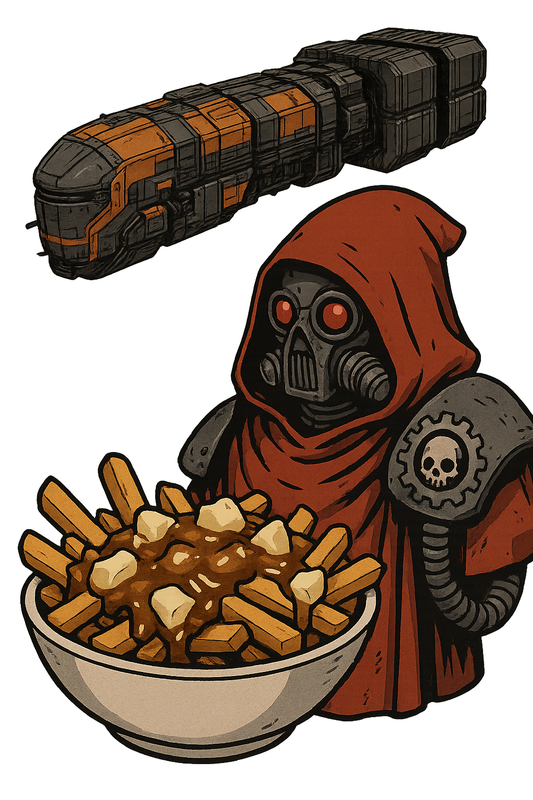

The Gravy Boat
 An Astrum Mechanica Company™
An Astrum Mechanica Company™
By the Omnissiah’s will and Astrum Mechanica’s funding, The Gravy Boat ensures your cargo reaches its destination — purged of inefficiency and sanctified by warp-stable spreadsheets.
Whether hauling sacred minerals, submitting relics for reclamation, or delivering a fresh cargo of golden fries, cheese curds and molten gravy, our freight and buyback services honor the eternal Rite of Logistics.